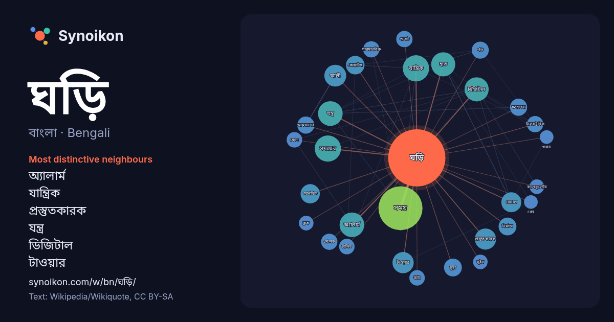

বাংলা · Bengali · word of the day list
ঘড়ি
“clock” · The words found around it in 886 instances from Bengali Wikipedia, Wikiquote.

Most distinctive neighbours
- অ্যালার্ম 23×
- যান্ত্রিক 23×
- প্রস্তুতকারক 17×
- যন্ত্র 16×
- ডিজিটাল 16×
- টাওয়ার 15×
- কোয়ার্টজ 13×
- দেয়াল 13×
- আণবিক 13×
- হাত 13×
- চূড়া 12×
- আমজদের 12×
- ক্ষণগণনা 12×
- দোলক 11×
- পকেট 11×
- নির্মাতা 10×
- সময়ের 10.0×
- ইলেকট্রনিক 9.7×
- কাঁটা 9.4×
- আলী 9.3×
× = how many times more often than in general Bengali Wikipedia text.
Most frequent neighbours
- সময় 73
- একজন 30
- তৈরি 27
- যান্ত্রিক 26
- সময়ের 26
- অ্যালার্ম 23
- যন্ত্র 23
- ডিজিটাল 22
- হাত 22
- আলী 18
- টাওয়ার 17
- ধরনের 17
- প্রস্তুতকারক 17
- ব্যবহৃত 16
- দেয়াল 15
- আণবিক 14
- সাধারণত 14
- কোয়ার্টজ 13
- চূড়া 12
- নামে 12
In context
- ঘড়ি এমন একটি যন্ত্র যা সময় নির্ধারণে সাহায্য করে। বিভিন্ন ধরনের ঘড়ি দেখতে পাওয়া যায়, যেমন হাত ঘড়ি, দেয়াল ঘড়ি ইত্যাদি। এটি প্রথম যান্ত্রিক ঘড়ি। Wikipedia snippets · ঘড়ি
- আলী আমজদের ঘড়ি (আলী আমজাদের ঘড়ি নামেও পরিচিত) বাংলাদেশের সিলেট শহরে অবস্থিত ঊনবিংশ শতকের একটি স্থাপনা, যা মূলত একটি বিরাটাকায় ঘড়ি, একটি ঘরের চূড়ায় Wikipedia snippets · আলী আমজদের ঘড়ি
- একটি অ্যালার্ম ঘড়ি (বা কখনো কখনো কেবল একটি অ্যালার্ম ) এমন একটি ঘড়ি যা নির্দিষ্ট সময়ে কোনও ব্যক্তি বা ব্যক্তি গোষ্ঠীকে সতর্ক করতে তৈরি করা হয়। এই ঘড়িগুলির Wikipedia snippets · অ্যালার্ম ঘড়ি
- প্রতিবন্ধীদের জন্য একটি ঘড়ি, অথবা একটি এনালগ বা ডিজিটাল মুখ ছাড়াও একটি শব্দ বৈশিষ্ট্য থাকতে পারে৷ যদিও তারা কথা বলছে বলে বিবেচিত হবে না, ঘড়িতে প্রায় যান্ত্রিক Wikipedia snippets · কথা বলা ঘড়ি
- পকেট ঘড়ি (বা পকেটওয়াচ) হল একটি ঘড়ি যা পকেটে বহন করার জন্য তৈরি করা হয়, একটি হাতঘড়ির বিপরীতে, যা কব্জিতে বাঁধা থাকে। ১৬ শতকে এদের বিকাশের পর থেকে প্রথম Wikipedia snippets · পকেট ঘড়ি
- ক্ষণগণনা ঘড়ি হল এক ধরনের ঘড়ি বা সময়গণক যন্ত্র যা একটি পূর্বনির্ধারিত সময়-ব্যবধান থেকে সময় শূন্যে (০০:০০) পৌঁছানো পর্যন্ত উল্টোদিকে সময় গণনা করা Wikipedia snippets · ক্ষণগণনা ঘড়ি
- প্রয়োজনে এমন একটি দোলক ঘড়ি তৈরি করেন যার ববটি একটি সাইক্লয়েডীয় বক্রপথে দোলে। তার নামানুসারে এই ঘড়ির নাম দেয়া হয় হাইগেনের ঘড়ি। তিনি ববটিকে সূক্ষ্ম Wikipedia snippets · হাইগেনের ঘড়ি
- বিবর্তনীয় বিকিরণ সম্বন্ধে অনুমান করা যায়। একে কখনো কখনো জিনগত ঘড়ি অথবা বিবর্তনীয় ঘড়ি বলেও আখ্যায়িত করা হয়। তথাকথিত "আণবিক ঘড়ির" উপস্থিতি সম্বন্ধে Wikipedia snippets · আণবিক ঘড়ি
More Bengali words
- অরণ্য
- আয়না
- ইতিহাস
- ঈশ্বর
- কাজ
- কুকুর
- ক্ষমতা
- খাদ্য
- গান
- গ্রীষ্ম
- ঘণ্টা
- ঘোড়া
- ছায়া
- জননী
- জলবায়ু
- জীবন
- ঝড়
- টাকা
- ট্রেন
- দারুচিনি
- দ্বীপ
- নক্ষত্র
- নীরবতা
- পরিবার
- পানি
- পাহাড়
- প্রকৃতি
- বাগান
- বিজ্ঞান
- বিড়াল
- বৃষ্টি
- ভাষা
- মধু
- মরুভূমি
- মানচিত্র
- মৃত্যু
- রাস্তা
- রুটি
- লবণ
- শরৎ
- শহর
- শিল্প
- শীত
- সত্য
- সময়
- সেতু
- সোনা
- স্বাস্থ্য
- হৃদয়
Precomputed on 2026-10-09 with default settings (±5 words, medium corpus). The interactive map can refresh it with live data.